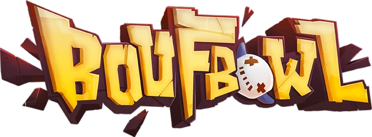
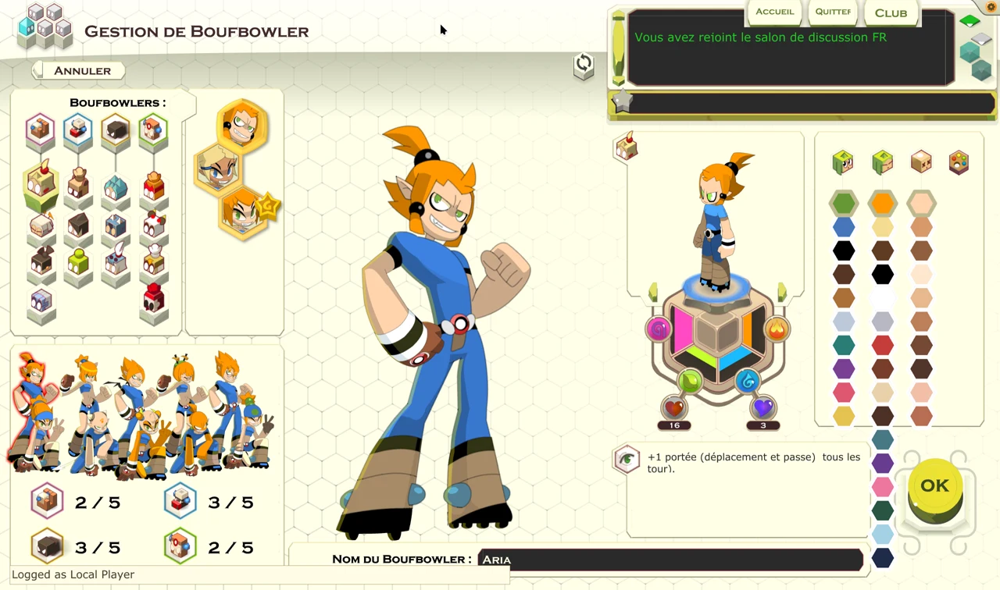
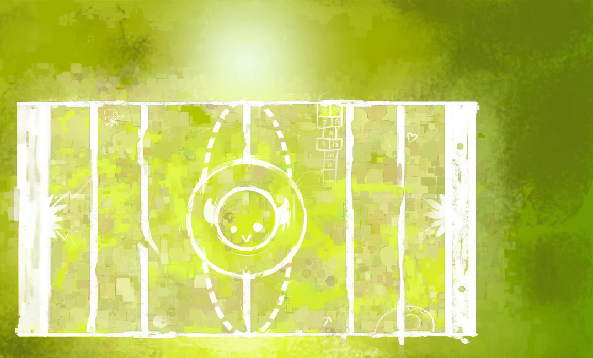

LE CERVEAU AVANT LE CRAMPON.
Des actions à préparer, des passes à tenter et des pouvoirs de classe à bien placer. Un sport tactique où réfléchir peut encore vous sauver les tibias.

JOUER ↓
Douze ans d’arrêt de jeu, ça suffisait.
Rechaussez les crampons
: le Boufbowl revient.
Le ballon a survécu. Pour vos dents, on
ne promet rien.
▣ Desktop♧ Android◎ Web expérimentalVERSION EN RESTAURATION

Le client original reprend du service. Les crampons aussi.
Composez votre équipe, préparez vos actions, puis regardez votre génie tactique rencontrer un adversaire. Généralement à pleine vitesse.
Des actions à préparer, des passes à tenter et des pouvoirs de classe à bien placer. Un sport tactique où réfléchir peut encore vous sauver les tibias.
Créez vos personnages, ajustez leur apparence et rassemblez un club qui vous ressemble. On ne juge pas. Enfin, pas avant le match.
Matchs, ladder, tournois ponctuels ou récurrents : le tableau d’affichage attend vos exploits. Les canaux de discussion aussi.
Explorez les vrais dessins, terrains et sons du jeu.
Et tout ce
qu’il reste à leur rendre.
Choisissez un personnage, un stade ou un son. Ici, on compte les ressources retrouvées, on montre les remplacements et on vous laisse écouter ce qui a survécu.
Chargement de l’inventaire des ressources…

Le client original, pour comparer avec la reproduction HTML. Cette capture ne reflète pas l’avancement de chaque classe.

ILLUSTRATION ORIGINALE · CLIENT FLASH

Une baffe sans son, c’est une poignée de main ratée.
Les musiques de stade sont détaillées au-dessus. Ce bilan porte sur les références connues et les fichiers présents, pas sur l’intégralité d’une archive originale disparue.
Retrouvé ≠ terminé : une ressource présente doit encore être comparée au jeu d’époque et testée en jeu. Les couleurs des classes restent à valider. Une archive qui traîne ? Venez vider vos vieux disques avec nous.
Le client Flash d’origine a été sauvé des vestiaires du temps. Dans son sac : à peu près la moitié des ressources. Depuis, on recoud les maillots, on remet le serveur sur pieds et on tente de rendre au Boufbowl sa bonne vieille mauvaise humeur.
Ce n’est pas encore le grand lancement. C’est une reconstruction jouable, en évolution, sur Web, Android et Desktop. Une belle occasion d’entrer dans l’équipe avant le coup d’envoi officiel.
Les personnages du tutoriel sont complets : Crâ homme et femme, Enutrof femme, Eniripsa femme et Iop homme.
Les autres ont retrouvé leurs illustrations plein écran dans toutes leurs poses, mais pas encore toutes leurs pièces animées, couleurs et textures.
ON CHERCHE DES BRAS. LITTÉRALEMENT.Les pouvoirs, les probabilités de lancer, de réception et de chute doivent retrouver leurs sensations d’antan.
Pour l’instant, de vieilles vidéos YouTube servent d’arbitres. Souvent en 240p. Vos souvenirs et vos tests feront mieux que les pixels.
TESTEURS, ARCHIVISTES ET VIEUX BRISCARDS : À VOUS DE JOUER.Le client originel, des correctifs ActionScript 3, un serveur actuellement écrit en Python, une base SQLite et des ressources supplémentaires. Le serveur pourra évoluer ; la priorité reste de retrouver le jeu. Le dépôt GitHub est encore privé. Demandez l’accès pour contribuer ; l’ouverture du code est prévue après le nettoyage du projet et son lancement.
Pour jouer dans les meilleures conditions, privilégiez le client Desktop ou l’application Android. Le navigateur sert surtout aux plus téméraires.
Ces deux clients sont les versions à privilégier pour jouer. Sur le Web, le client Flash passe par l’émulateur Ruffle : cette version est lente, présente des bugs et reste instable.
Le client Desktop est recommandé pour jouer. Il se connecte au serveur du jeu : aucun serveur local ni Python à installer.
LINUX · TÉLÉCHARGER ↗Linux x86-64 · Wine requis · sans Python BUILD DISPONIBLE WINDOWS · TÉLÉCHARGER ↗Windows · sans Wine ni PythonL’application Android fait partie des façons recommandées de jouer. La tactique au bout des doigts, les crampons en moins. Tous les assets disponibles sont inclus dans l’APK ; les parties utilisent le serveur distant.
TÉLÉCHARGER L’APK ↗APK · Android 6+ · ARM64Le client Flash tourne ici avec Ruffle. C’est lent, parfois bugué et instable : pour un vrai match, choisissez plutôt Desktop ou Android.
ESSAYER LA VERSION WEB ↗Version expérimentale · lente, buguée et instableOn cherche aussi des bénévoles pour rendre le jeu fiable sur le Web : spécialiste de Ruffle, de Flash/AS3, du rendu ou des performances navigateur, venez nous aider à trouver une solution. Les ateliers de restauration de cette page sont en HTML et JavaScript, sans émulateur.
Pas besoin de marquer en finale pour sauver le Boufbowl. Un dessin, une archive, un test ou un bon montage peut faire gagner toute l’équipe.
RETROUVEZ-NOUS SUR LE DISCORD DOFUS 3 ↗ BÉNÉVOLAT · PROJET NON COMMERCIAL · BONNE HUMEUR CONSEILLÉEBoufbowl est un fan game indépendant, non commercial et non affilié à ANKAMA Games. Les noms, personnages et éléments d’origine appartiennent à leurs ayants droit.
« Tant que c’est fait avec respect, que c’est non commercial et que ça ne cannibalise pas notre univers, je ne vois aucun problème. »
— Tot, propos du 12 octobre 2026 rapportés par le porteur du projet. Source publique à documenter. Cette citation n’est pas présentée comme une autorisation spécifique du projet ou une affiliation.
LE SIFFLET A SONNÉ.
À VOUS DE JOUER. ↗LES DENTS DE LAIT NE SONT PAS UNE ARMURE.